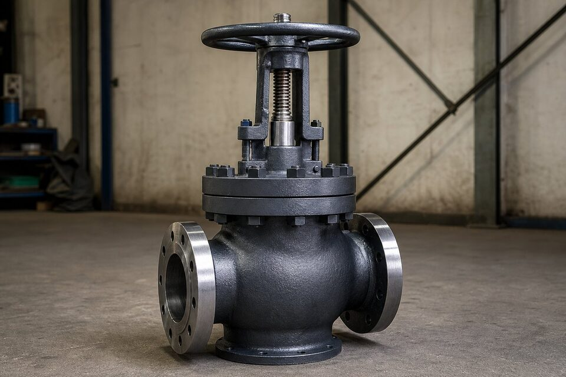

جایگاه مرجع طراحی شیرآلات
این استاندارد، چتر مشترک طراحی شیرهای فلزی است: کلاسهای فشاری، جداول فشار-دما بر اساس گروه متریالی، حداقل ضخامت بدنه و الزامات انتهای اتصال. وقتی در مشخصه پروژه، کلاس فشاری شیر ذکر میشود، مقادیر مجاز از همین مرجع استخراج میگردد.

کلاسهای فشاری و جداول فشار-دما
کلاسهای رایج از صدوپنجاه تا چهارهزاروپانصد را شامل میشوند. فشار مجاز هر کلاس به گروه متریالی بدنه و دمای کاری بستگی دارد:
| گروه متریالی | مثالها | کاربرد |
|---|---|---|
| کربنی | بدنه فولاد کربنی ریختگی و فورج | خطوط عمومی فرایندی |
| دمای پایین | فولادهای ضربهخورده | سرویسهای زیر صفر |
| آلیاژی | کروم-مولیبدن | دمای بالا |
| استنلس | آستنیتی و داپلکس | سرویس خورنده |
برای هر گروه، جدول فشار-دمای جداگانه تعریف شده است.
الزامات بدنه و انتهای اتصال
- حداقل ضخامت بدنه بر اساس سایز و کلاس تعریف میشود.
- انتهای فلنجی، رزوهای و جوشی هر یک الزامات خاص خود را دارند.
- بازرسی بدنه شامل کنترل ابعاد، ضخامت و حک متریال است.
- تست بدنه و نشیمنگاه طبق استاندارد تست شیرآلات انجام میشود.
رابطه با استانداردهای خانوادههای شیر
استانداردهای هر خانواده شیر (مانند شیر دروازهای فولادی، شیرهای خط انتقال یا شیر سایز کوچک) الزامات ساخت و ابعادی خاص خود را دارند، اما کلاس فشاری و مبانی فشار-دما به این مرجع بازمیگردد. بنابراین در استعلام، ذکر همزمان خانواده شیر و کلاس فشاری ضروری است.
کاربرد در استعلام و بازرسی
- نوع شیر، سایز و کلاس فشاری را صریح ذکر کنید.
- متریال بدنه و تریم را متناسب با سیال انتخاب کنید.
- دمای سرویس را برای تعیین فشار مجاز واقعی ارائه دهید.
- حک بدنه و گواهی مواد را در تحویل کنترل کنید.
- الزامات تست نشتی را مشخص کنید.
کلاسهای رایج و کاربرد
| کلاس | کاربرد معمول |
|---|---|
| صدوپنجاه | خطوط عمومی با فشار پایین |
| سیصد | رایجترین کلاس خطوط فرایندی |
| ششصد و نهصد | سرویسهای پرفشارتر |
| پانزدهصد و بالاتر | سرویسهای بسیار پرفشار خاص |
متریال تریم و نشیمنگاه
- تریم باید متناسب با سیال، دما و سیکل کاری انتخاب شود.
- در سرویسهای ساینده، سطوح سختکاریشده در نظر گرفته شود.
- الزامات نشتی باید بر اساس استاندارد تست شیرآلات مشخص شود.
- هماهنگی جنس تریم با بدنه برای جلوگیری از خوردگی گالوانیکی.
اشتباههای رایج سفارش و کنترل مدارک
استاندارد طراحی شیرآلات، چارچوب فنی را مشخص میکند اما در سفارش واقعی، چند اشتباه رایج وجود دارد که میتواند کالای تحویلی را با انتظار پروژه ناهمخوان کند. اولین اشتباه، فرض کردن برابری کلاس فشاری در همه دماهاست؛ همان طور که در جداول فشار-دما دیده میشود، ظرفیت مجاز یک کلاس با افزایش دما کاهش مییابد و انتخاب کلاس صرفا بر اساس فشار در دمای محیط، در سرویسهای داغ میتواند ناکافی باشد. همیشه فشار و دمای کاری واقعی را با هم در جدول مربوطه کنترل کنید. دوم، ابهام در انتهای اتصال است؛ استاندارد چند نوع انتها را پوشش میدهد و ذکر نکردن دقیق نوع اتصال، تلرانس سطح آببندی و استاندارد ابعادی فلنج، میتواند به تحویل کالایی منجر شود که با خط موجود قابل اتصال نباشد. سوم، مساله متریال است؛ استاندارد طراحی، جنس بدنه را از میان گروههای متریالی مجاز تعریف میکند اما انتخاب گرید مشخص متناسب سیال، بر عهده سفارشدهنده است. ذکر صریح گرید بدنه، تریم و در صورت نیاز الزامات تکمیلی مانند تست ضربه، باید در برگه مشخصات انجام شود. چهارم، نادیده گرفتن تستهای تکمیلی در سفارش است؛ تستهای استاندارد کارخانه معمولا بدنه و نشیمن را پوشش میدهند اما اگر پروژه به تستهای خاص مانند تست نشتی با گاز یا تستهای تکمیلی شخص ثالث نیاز دارد، باید قبل از تولید ذکر شود، چون اضافه کردن آنها پس از ساخت ممکن نیست یا هزینه بالایی دارد. پنجم، کنترل مدارک تحویلی است؛ گواهی آزمون باید نتایج تست بدنه و نشیمن را نشان دهد و علامتگذاری بدنه شامل کلاس، سایز و متریال با برگه مشخصات تطبیق داده شود. در پروژههای بزرگ، یک چکلیست کنترل مدارک برای هر شیر تهیه و نتایج آن در پرونده تجهیز بایگانی شود تا در بازرسیهای آینده و ممیزیها، سابقه کامل در دسترس باشد.
جمعبندی
مرجع طراحی شیرآلات، زبان مشترک کلاس فشاری و متریال است. درک آن، استعلام دقیقتر و بازرسی قابل دفاعتری ممکن میسازد.
سوالات رایج
این استاندارد برای کدام شیرها کاربرد دارد؟
مرجع طراحی عمومی برای شیرهای فلزی با انتهای فلنجی، رزوهای و جوشی است و کلاس فشاری، جداول فشار-دما و حداقل ضخامت بدنه را تعریف میکند. استانداردهای خاص هر خانواده شیر، الزامات تکمیلی خود را دارند.
کلاس فشاری شیر از کجا میآید؟
از جداول فشار-دمای این استاندارد که متریال بدنه را در گروههای مختلف طبقهبندی کرده است. فشار مجاز هر کلاس تابع جنس بدنه و دمای کاری است، نه عدد کلاس به تنهایی.
چرا حداقل ضخامت بدنه مهم است؟
بدنه شیر جزو تحت فشار خط است و باید تحمل فشار را داشته باشد. حداقل ضخامت تعریفشده، مبنای بازرسی و پذیرش بدنه در تحویل است.
در استعلام خرید چه کاربردی دارد؟
ذکر کلاس فشاری و متریال بدنه به همراه دمای سرویس، امکان پیشنهاد شیر منطبق را میدهد. بازرسی تحویل نیز کنترل حک بدنه و گواهی مواد را بر همین مبنا انجام میدهد.
مطالب مرتبط
- راهنمای جامع شیر دروازهای
- راهنمای شیر کروی (گلوب ولو)
- شیر توپی (API 6D) — انواع و انتخاب
- راهنمای جنس و متریال فلنج صنعتی
- استاندارد فلنجهای جوشی (ASME B16.5)
با ذکر نوع شیر، سایز، کلاس فشاری، متریال بدنه و دمای سرویس، شیر منطبق با مرجع طراحی به همراه مدارک کامل پیشنهاد میشود.
مشاهده صفحه محصول ← ثبت RFQ همین محصولتامین این تجهیزات را به پیشرو تجهیز فرتاک بسپارید
شرکت پیشرو تجهیز فرتاک تامینکننده تخصصی تجهیزات صنعتی برای پروژههای نفت، گاز، پتروشیمی، فولاد و نیروگاهی است. برای دریافت پیشنهاد فنی و قیمت، استعلام (RFQ) خود را ثبت کنید تا کارشناسان مهندسی فروش در کوتاهترین زمان پاسخ دهند.
- تامین شیرآلات صنعتیخانواده کامل شیر با گواهی مواد و تست
- تامین تجهیزات پایپینگفلنج و اتصالات هماهنگ با شیر